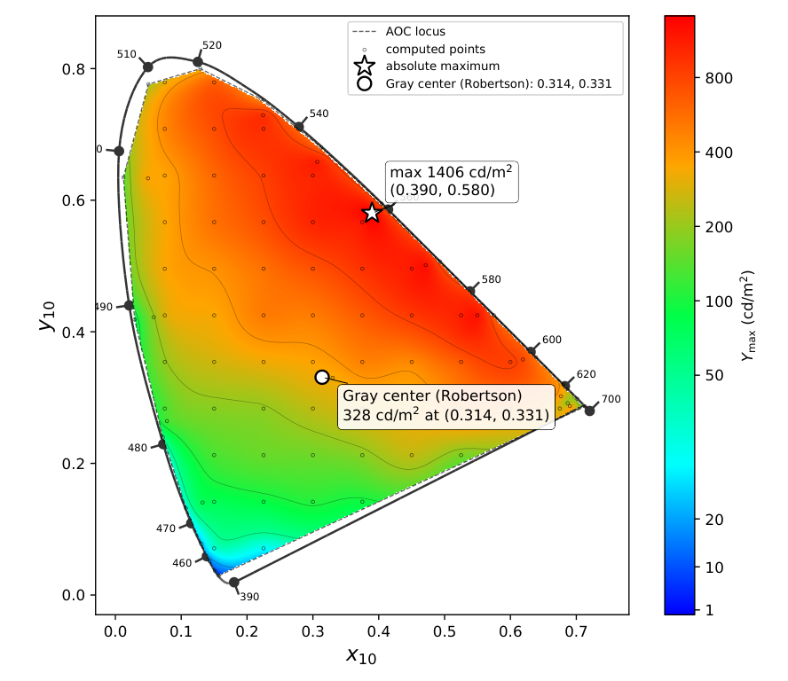

一种声光色度计
摘要
均匀颜色空间与色差公式所依据的视觉数据，几乎都是通过表面样品和传统显示器获得的，而后者的基色将测量限制在有限的色度范围内。因此，高饱和颜色空间区域是人类颜色感知中测量最少的部分，而与此同时，量子点、microLED 和激光显示器已开始在该区域内工作。要弥补这一空白，需要比任何固定基色器件所能产生的更饱和的刺激，同时还需要视觉实验所要求的稳定性和均匀性。我们为此研制了一种声光色度计。四通道声光可调谐滤波器从超连续谱激光器中选取 443–660 nm 校准范围内的窄光谱分量，测得线宽为 1.37–3.20 nm；每个分量的波长和辐射亮度均通过电子方式设定，因此基色组本身成为实验变量。紧凑型漫射器–光管匀光器将所选分量合成为均匀观察场，光谱反馈则稳定其强度。校准后的基色组覆盖了 CIE 1964 光谱轨迹在 色度平面中所包围面积的 95%。计算得到的最大亮度达到 1406 cd m-2，在灰色 Robertson 色度下可获得 328 cd m-2。在 18 mm 观察场上，平均空间 差异为 0.913；在连续反馈下复现的五个 Robertson 色中心，在 10 分钟间隔内的平均目标误差为 0.34–1.26 。因此，该仪器可提供经过校准、均匀且稳定的高饱和刺激，旨在将色差测量的经验基础扩展到仍缺乏数据的区域。
关键词
acousto-optic tunable filter | programmable color stimulus | color difference | feedback stabilization | spatial uniformity[][*] \authormarkAKSENTSEV et al. \titlemark一种声光色度计
P. A. Aksentsev ()
1 引言
人类颜色视觉已被定量测量了一个世纪。自 1920 年代以来开展的颜色匹配、颜色辨别和色差实验，提供了用于推导出仍在使用的 CIE 标准观察者、均匀颜色空间和色差公式的数据 1, 2, 3, 4, 5。这些实验都有一个很少被明确说明的约束：其刺激是标准照明体下观察的表面样品，或显示器基色的混合，而两者都将观察限制在有限的色度范围内。因此，色度学的经验基础在中性轴附近密集，而向光谱轨迹方向稀疏，正如累积视觉数据集的覆盖范围所清楚表明的那样 6。在有意采集高彩度数据的地方，例如在高彩度蓝色中心的 NCSU-B2 数据集中，公式的准确性和相对排序不同于在公式拟合所依据的饱和度较低色中心处所确定的结果 7。高饱和颜色仍然是人类颜色感知中探索最少的区域。
这一差距已成为实际问题。量子点、microLED 和激光显示器现在可再现接近 Rec. 2020 基色的颜色，而这些基色位于光谱轨迹本身 8, 9, 10, 11 上。此类器件的校准、色域映射和颜色容差规范在均匀颜色空间中进行，因此它们所呈现的每种饱和颜色都要用外推到定义该指标的数据之外的评价指标来评判。使用宽色域显示颜色的评估证实，名义均匀颜色空间和色差公式的性能取决于颜色中心以及色差大小 12, 13, 14。这些评估本身受显示色域限制，而基色数量及其光谱形状由器件固定：度量最不可靠的区域恰恰是固定基色硬件无法达到的区域。
填补这一空白需要比任何固定基色显示器所能产生的更饱和的刺激，在心理物理实验整个时段内空间均匀且辐射度稳定的视场中呈现，并且基色组可在程序控制下改变，而不是通过重建仪器来改变。本文描述的色度计正是为满足这些要求而构建的。
视觉色度计为颜色匹配和颜色辨别实验提供可调的光混合。此类测量对于检验色差公式以及表征观察者相关的匹配是必要的，尤其是对窄带和高饱和刺激 13, 14, 15。Brown、Stiles 和 Burch 以及 Bongard 和 Smirnov 工作中使用的经典仪器，确立了光谱受控刺激在这些实验中的价值 2, 3, 4。电子控制允许调用已校准的设置并编程刺激序列，而可实现的色域和辐射度分辨率仍是光学系统及其驱动器的属性。
具有电子可选窄带基色的视觉色度计可控制每个光谱带的中心波长和辐亮度。窄带可实现高饱和刺激，电子调谐允许在不更换发射器的情况下改变基色组。对于每个所选基色组色域内的目标，可以调节各基色的辐亮度，以针对指定观察者保持相同的 XYZ 三刺激值。所得光谱对该观察者而言是同色异谱的：其光谱组成不同，但计算出的颜色相同。这一能力支持关于观察者相关颜色匹配和光谱组成效应的实验。定量使用需要表征目标精度、空间均匀性和时间稳定性。
可编程光源已采用滤光灯、激光器和多通道LED。早期的一种可调谐LED色度光源将十个LED组集成在积分球中，并报告在50 h光学测试期间，在和中的色度稳定性在0.001以内，同时在数小时内源输出稳定性优于0.2% 16。后来的视觉研究照明器使用六个含9个LED的灯头和1 m积分球，提供漫射的光谱可编程照明 17。最近的一种多基色视觉三色仪报告了光谱重复性，以相对于归一化至单位峰值的平均测量光谱的均方根百分比误差（RMSE%）表示。其两个视场的短期值分别为0.40和0.42 RMSE%，六个月后分别增至0.52和0.73 RMSE% 18。对19通道LED光源进行闭环控制，使该研究评估的类D65和类A照明体的目标误差从大于1降至小于 19。这些结果以不同的性能度量记录了光谱合成和时间控制：光输出的变化、光谱之间的差异、色度偏移或计算出的色差。因此，每个结果均以其原始度量引用；仅凭已发表的汇总值无法转换为衡量颜色准确度的共同度量。
声光可调滤波器（AOTF）通过使光从由晶体中的声波产生的折射率调制发生衍射来选择光谱带。驱动声换能器的射频（RF）信号通过其频率控制所选波长，并通过其幅度控制衍射强度 20。AOTF已同时用于光谱颜色测量和刺激生成。Zajtsev等人开发了一种基于AOTF的仪器，可从测量光谱计算色坐标 21。对于刺激生成，AOTF允许以电子方式选择窄光谱带并控制其相对贡献。Machikhin等人演示了在AOTF滤波的宽带光源中的波长调谐和透射带形状控制 22。Romanova等人随后研究了将宽带光源耦合到滤波器所需的照明光学系统 23。这些研究共同涉及输出光谱的电子控制和向滤波器的光学耦合。
后续工作将这种方法直接应用于色彩复现。Beliaeva 等研究了两种和三种窄光谱成分的混合以及影响其色度精度的因素 24。Machikhin 等使用 AOTF 选择的 460、520 和 650 nm 基色复现了 19 个 ColorChecker 目标，报告了平均和中位 值分别约为 1.25 和 1.12 25。颜色由空间平均的相机数据评估，因为未混合的衍射场不均匀。也已提出专门为基于 AOTF 的视觉色度学设计的光学系统 26。
因此，先前的工作已经确立了 AOTF 颜色合成，并考察了视觉色度学所需的光学布置。本研究考察如何将这种光谱灵活性同足够均匀的观察场以及校准后可复现的输出结合起来。对于用于色觉实验的仪器，这些特性必须一起评估。因此，本研究在单台基于超连续谱的仪器中表征光谱线宽、目标精度、时间重复性、空间均匀性和建模色域，并指定观察者、参考白、视场几何和测量间隔。
本工作提出并实验表征了一种声光色度计（AOC），如图 1 所示，其基于由超连续谱激光照射的四通道 AOTF。超连续谱产生通过非线性光学过程展宽激光辐射，以产生连续宽带光谱 27。滤波后，可用光谱覆盖 380–750 nm。光源的光束质量因子为 ，接近理想高斯光束的值 1。在校准波长和四个通道上，测得的半高全宽（FWHM）为 1.37–3.20 nm。紧凑的两级漫射器–光管匀化器将角度分离的光束合并，旋转漫射屏通过时间平均抑制静态散斑 28，反馈以 50 Hz 调节每个所选光谱成分的强度。该色度计旨在向人类观察者呈现受控颜色刺激。在本研究中，其输出使用 X-Rite i1Pro 2 主分光光度计在发射模式下进行仪器表征。由测得光谱计算的颜色差描述与目标颜色的一致性和视场的一致性；此处未报告观察者判断。
电子可调谐的几纳米宽谱线与宽色度覆盖范围的结合，是采用 AOTF 架构的主要动因。改变声驱动频率即可选择不同的一组基色波长，而无需更换任何发射器。随后利用校准数据调整每条所选谱线的贡献，使它们的混合复现相同的目标 值，前提是该目标在新的基色下仍可实现。该仪器能够改变刺激的光谱组成，同时为所选标准观察者保持其计算得到的颜色。多基色三色仪已使用光谱可选刺激来估计个体颜色匹配函数和视锥光谱灵敏度 18；相关工作表明，窄基色刺激也有助于刻画观察者同色异谱并检验观察者特定的颜色复现 15, 29, 30。因此，AOC 可支持关于个体颜色匹配、观察者同色异谱以及饱和色中心附近色差行为的受控实验，前提是其空间和时间性能经过验证。
本研究描述了一种基于校准的三通道颜色复现算法，并使用归一化光谱误差 (NSE)、 色差 以及由 CAM16 颜色外观模型 (CAM16-UCS) 导出的均匀颜色空间中的差异 来表征 18-mm 观察场。在反馈持续启用的情况下，用主仪器测量五个复现色中心。建模色域表示为校准后的 AOC 在国际照明委员会 (CIE) 1964 色度图中可达到的面积，占光谱轨迹与紫线所围面积的百分比。一项补充的三基色计算在该计算所用功率限制下，映射整个色度图中可达到的最大亮度。
硬件最多可同时运行四个光谱通道。颜色再现和空间均匀性测量使用三个活动通道，而光谱表征则分别检查全部四个通道。对于具有固定光谱形状的三个线性独立基色，可实现的目标具有唯一一组非负通道辐射亮度。第四基色在光谱混合中引入额外自由度，因此需要另一选择判据——例如驱动分辨率、观察者一致性、光谱鲁棒性或功率效率——并进行单独验证。这个多目标四通道问题不在本研究范围内。选择灰色作为通道平衡的严苛测试，因为窄带基色之间的小相对误差会在灰色附近产生可观的偏差。对红、绿、蓝和黄的测量还评估目标精度及其色度和亮度贡献在不同工作点之间如何变化。用于时间精度和重复性31；CAM16-UCS 还表征空间非均匀性32。接近 1 的值仅作为名义可感知区域讨论，因为阈值取决于颜色中心、亮度、视场大小、适应状态和观察者33，34，35。

2 方法
实验流程结合了配对光谱校准、基于校准的目标颜色合成，以及所选光谱分量的闭环调节。仪器性能通过光谱线宽测量、空间分辨色度测量和观察场中心重复测量进行评估。色度覆盖率由测得的校准光谱单独计算。
2.1 光学架构与空间匀化
图2所示的色度计基于四通道 AOTF，其 TeO2 声光晶体由 70–135 MHz 驱动。第一透镜将 SCLS-PS-UV 光源输出光纤出射的超连续谱辐射准直。紫外（UV）和红外（IR）截止滤光片将透射光谱限制在 380–750 nm，望远系统调节光束直径，以在 AOTF 孔径上提供所需照明。转向镜对入射光束进行精确的角度和位置对准。未衍射的零级光束由挡光块拦截，而一级衍射分量用于颜色再现。激光光束质量因子为。在已校准波长和四个通道范围内，测得的 FWHM 为 1.37–3.20 nm；测量程序见第2.6.1节。对于通道，RF 驱动频率设定所选波长，而 RF 幅度指令控制衍射谱线辐亮度。各对通过计算机控制的驱动器独立指定。
与 Machikhin 等人使用的光纤耦合卤素灯25不同，本系统使用具有的超连续谱激光器。其光束能够以低角发散度准直，因此光以相对较窄的入射角范围进入 TeO2 晶体。对于固定的入射几何和 RF 频率，高效衍射发生在满足布拉格相位匹配条件20的波长附近。因此，减小入射角的扩展可减小所选光谱带的角度展宽，并有助于保持波长选择性衍射。这一物理优势源于照明几何；未将衍射效率与基于灯的系统直接比较。图2将光路布局与组装仪器的照片结合在一起；灰色虚线连接对应部件。

AOTF 以不同角度衍射不同波长，产生空间分离的光束，需要进行匀光。在视觉色度学中，漫射屏与镜面内衬矩形光管内部多次反射的组合已得到确立36。本系统的两级漫射器—光管匀光器利用这种组合混合各光谱分量，并形成所需的观察场。18 mm 的视场在 515 mm 处张角约为；该几何视角不同于下文数值色度计算所用的 CIE 1964 颜色匹配函数。
孤立谱线的高空间和时间相干性会在光被观测表面散射时产生颗粒散斑图案。因此，漫射表面被连续旋转，导致在观察者或探测器的有限积分时间内散斑图样不断变化。所得的时域平均会强烈抑制静止的颗粒结构 28。
使用两台仪器进行表征与控制。X-Rite i1Pro 2 分光光度计工作在发射模式，作为主仪器，记录第 2.3 节所述颜色再现算法所用的绝对光谱辐射亮度。YIXIST YOA-8404-05 作为反馈光谱辐射计，其标称光谱采样间隔为每个探测器像素 0.3 nm。反馈算法使用其波长分辨的探测器信号（相对单位）。
2.2 校准与辐射度量监测
SCLS-PS-UV 超连续激光器在开机后先稳定 2 h，再进行校准。其滤波输出覆盖 380–750 nm，光束质量因子为 。随后对每个物理 AOTF 通道 和选定射频 （其设定谱线中心 ）进行校准。射频幅度指令以 1% 的增量在其可用范围内扫描，其中 索引测得指令电平 ，这些电平属于通道 。在每个电平下，两台仪器均记录波长分辨光谱。经下文定义的参考归一化后，每个校准表条目为成对记录
| (1) |
其中 是发射模式下由主分光光度计测得的光谱辐射亮度， 是反馈光谱辐射计同时测得的相对光谱响应。对每条选定谱线，在参考归一化和谱线级监测中，两台仪器使用相同的波长区间 ：
| (2) |
这里， 与经验选择的积分宽度 均以纳米为单位。对每条选定谱线，该区间固定。这些窗口积分提供参考值和反馈值；色度计算使用完整测得光谱。
当前数据集包含 19 个频率设置，间隔为 3 MHz。该采样间隔是实验选择，而非固有极限。射频合成器在 70–135 MHz 范围内的频率设置分辨率为 0.01 MHz，因此通过更小的射频频率增量可以获得更密集的波长校准。采集完整幅度响应时，每条选定谱线和每个通道约需 2 min。该持续时间主要取决于 X-Rite i1Pro 2 的采集时间，仪器会为每个光谱自动选择该时间。
在校准扫描期间，使用 X-Rite i1Pro 2 每 5 min 在每个选定的参考频率处记录具有固定 RF 幅度指令的参考刺激，其中对参考频率进行索引。令对在该频率处的连续参考采集进行索引，并令表示测得的参考光谱辐亮度。其积分在上计算，是由方程(2)在相应参考波长处定义的区间。扫描后，分别对每个频率计算平均参考积分，并将相关校准记录重新缩放至该均值：
| (3) | ||||||
这里，是在频率处进行 X-Rite 参考采集的次数，是归一化因子。上标表示参考归一化前的光谱；和表示得到的归一化主光谱和反馈光谱。为简洁起见，在方程(3)中省略了它们的波长和指令自变量。同一因子应用于每个相关校准记录的两个光谱，在补偿光源慢变化的同时保持其对应关系。
2.3 三通道颜色再现算法
令表示校准后的波长。对每个基色，积分线辐亮度作为校准表坐标。该表提供相应的 RF 幅度指令和测得光谱辐亮度。合成光谱是这些基色光谱之和：
| (4) |
对于通道辐亮度的试探向量，基色矩阵的各列是由完整对应光谱计算得到的三刺激值：
| (5) |
积分覆盖整个记录光谱范围，而不是线监测窗口。函数、和是 CIE 1964 颜色匹配函数。因子将记录的光谱辐亮度单位转换为三刺激值标度，其中以表示。
目标由三刺激值向量指定。在固定试探点处，非奇异给出无量纲校正因子：
| (6) |
因此，指定了对通道试探辐亮度的乘性校正。
对于每个试探，算法找出两个相邻的、间隔为 1% 的指令，其测得主光谱线辐亮度将该值夹在中间，并对成对光谱和进行线性插值。插值得到的主光谱构成，方程(6)更新试探辐亮度，并重复查表直至辐亮度收敛。该迭代考虑了线型随指令电平的小幅变化。收敛后的指令舍入到 0.1% 的硬件指令步长。插值仅限于每个校准波长处测得的指令电平；波长本身不进行插值。仅当所有请求辐亮度均为非负、处于校准通道范围内，并满足 RF 驱动器的共享电功率限制时，才接受该波长组。候选波长三元组按一个 0.1% 指令步长引起的预测颜色位移进行排序。本测量中使用的 Gray 工作点用再现。
2.4 闭环稳定
反馈环通过调节颜色再现算法所使用的同一 RF 幅度指令，来调节每个选定谱线的积分信号。对于每条配对校准记录，主仪器谱线辐亮度和反馈谱线积分分别为
因此，校准表包含在同一指令下测得的两个谱线积分。
为补偿超连续谱光源的光功率漂移，由 YIXIST YOA-8404-05 反馈光谱辐射计测量匀光器未镀膜第一表面反射的光。由于 AOTF 驱动频率高度稳定，谱峰位置由初步校准获得。
对于每个活动通道，反馈光谱在区间 上积分，该区间由式 (2) 定义。颜色再现解给出所需的主仪器谱线辐亮度 。通过配对校准记录，该值确定指令 以及反馈光谱辐射计对应的目标谱线值 。当前谱线值由更新 时测得的光谱获得：
| (7) | ||||
因此， 是波长分辨的反馈光谱辐射计信号，而 和 是控制器所使用的目标谱线积分和当前谱线积分。反馈律调节当前反馈值，使其与颜色再现所需主仪器辐亮度相配对的校准值相匹配。尽管本实验中三个通道处于活动状态，但相同流程针对四个 AOTF 通道中的每一个均有定义。
控制器在 处更新。在更新 时，将当前谱线值 与目标值 进行比较。指令增量与谱线值误差成正比：
| (8) | ||||
其中 是谱线值误差， 是比例增益。初始指令 取自收敛的校准表解。50-Hz 值表示数字更新频率，而非闭环带宽；闭环带宽未被测量。
在用于量化准确度和重复性的中心色测量过程中，反馈环始终处于启用状态。RF 驱动器支持高达 1 kHz 的幅度指令更新；该硬件设置速率不同于 50-Hz 反馈更新频率，且不表示光学建立时间。
2.5 驱动范围表征与均衡
四通道 RF 驱动器的输出幅度在 70–135-MHz 工作范围内单调下降，最低频率与最高频率之间的幅度变化约为一个数量级。AOTF 的布拉格衍射效率在整个调谐范围内也高度不均匀：在光学调谐范围中心附近及其长波长区域出现明显极大值，而在短波长区域存在显著极小值。因此，RF 驱动器输出与衍射效率的组合波长依赖性产生了强烈不均匀的光学响应。
非线性指令–辐射亮度响应取决于声光材料以及特定单元设计所建立的声场37。因此，必须针对每个通道和波长表征其饱和行为。一旦光谱通道被驱动至超过饱和，光谱峰值幅度就会下降，谱线随之展宽。该区域内的指令被排除在外，因为它们会降低可用的峰值谱线辐射亮度并削弱光谱选择性。可用指令上限由每次幅度扫描确定。当连续五个值均较前一个峰值至少降低 10% 时，即判定为饱和；若未触发该判据，则将测得最大值处的指令保留为范围上限。对于标称 10 位满量程，相应的可用指令级数为。在四个通道和 19 个波长设置下， 的范围为 35% 至 100%，对应约 358–1024 个指令级 [图 3(a)]。图 3(b) 展示了在代表性波长下，测得的线积分随指令增大而上升并随后下降的情况。
为了在光谱范围内更均匀地分配可用指令级，对通道施加选择性衰减（图 3）。通道分配可根据实验条件的要求重新指定。

2.6 表征流程
表征流程旨在评估 AOC 与受控颜色刺激生成相关的主要特性。测量涉及仪器性能的三个互补方面：所生成原色的光谱特性、观察场的空间均匀性，以及颜色再现精度与稳定性。此外，校准后的光谱数据用于估计可达色度区域及其范围内可达到的最大亮度。
2.6.1 光谱表征
2.6.2 空间均匀性
使用来自配套匀光器研究的高光谱数据，在直径 18 mm 的圆形观测区域图像上评估所得色场的空间均匀性。对图像数据进行暗校正，并利用中心 X-Rite 测量以及为两台仪器建立的逐行光谱响应校正，将其转换为辐射亮度标度。将每个像素光谱与该区域的平均光谱进行比较。针对 CIE 1964 标准观察者，在 400–730 nm 范围内计算三刺激值，并使用 D50 参考白进行转换。该分析量化了 NSE、 和 CAM16-UCS 。为了将光谱形状变化与亮度变化分开，NSE 既根据辐射亮度光谱计算，也在将每个像素光谱归一化到相同光谱积分后计算。
2.6.3 颜色再现准确性与稳定性
使用发射模式下由主分光光度计观察的均匀化视场中心区域的测量结果，评估了色彩再现精度和短期重复性。五个目标对应 Robertson 色差评估指南中规定的 CIE 参考色中心 38。其目标坐标见表 2。表中列出的 值是以 为单位的、用于这些发射刺激的绝对亮度。在每个目标周围进行色差步进测量期间，中心颜色被重复测量；这些中心颜色读数构成本文分析的精度序列。采集期间反馈始终保持启用。稳定性测量实验在校准后 12 h 开始。在启用反馈之前，基于校准的灰度设置给出的误差约为 。每个测量刺激均使用 CIE 1964 标准观察者和 100 适应水平下的 D50 参考白，转换到 CIE 1976 颜色空间（CIELAB）。采用单位参数因子 31 计算了 。X-Rite 规定在其声明的 D50、 测试条件下 39，白色上的短期重复性为 ；这是仪器重复性规范，而不是针对当前窄带测量的一般不确定度界限。
为了分别评估色度和亮度失配，对每个中心颜色读数重新计算 ：先保留测得的 并将 设为目标值，再保留测得的 并将 设为目标坐标。总误差和两个固定坐标误差分别对每个颜色序列中包含的读数取平均。每个结果是各个目标误差的均值，而不是由平均刺激计算得到的误差。所有比较均使用相同的 D50 参考白和单位参数因子；两个固定坐标差异不可相加。
2.6.4 色度色域与亮度计算
色度色域由 19 个校准波长计算得到，与稳定性测量无关。将校准后的基色光谱转换为 CIE 1964 三刺激值，再转换为 色度。在线性非负模型中，每个三基色组定义一个色度混合三角形；这些三角形的并集定义了建模的 AOC 区域 。对于相同的基色色度，该并集给出的几何区域与所有四基色凸包的并集相同。色度覆盖率计算为
| (9) |
其中， 是由 CIE 1964 光谱轨迹和紫线围成的区域。因此， 是二维色度面积比，而不是 CIELAB 或 CAM16-UCS 中的三维体积。这种几何投影不施加固定亮度，也不施加 RF 驱动器的共享电功率约束。
为了表征可达到的亮度，另做一次三基色计算，使用相同的校准数据来确定 ，即在计算所施加的功率限制下，每个所评估色度处可获得的最大亮度。所得映射将色度边界与该边界内可达到的亮度结合起来。对于规定的亮度 ，色度还必须额外满足 ；仅凭色度面积覆盖率并不能确立这一条件。该映射是基于校准的预测，而不是在每个绘制点处的一组独立测量。
3 结果
结果总结了五个复现色中心的实测光谱线宽、场均匀性、精度和短期变化。主要规格之后是各项单独测量，以及根据校准器件模型计算得到的色度覆盖率和最大亮度映射。
3.1 AOC 的主要特性
表 1 总结了主要的光学、控制和实测性能特性，并将硬件能力与用于所报告测量的三通道配置区分开来。
| Characteristic | Value | Basis or condition |
|---|---|---|
| Optical source | SCLS-PS-UV 超连续谱激光器 | 滤波输出 380–750 nm； |
| AOTF cell material | TeO2 | 四通道声光单元 |
| AOTF RF operating range | 70–135 MHz | Multi-frequency drive |
| 同步光谱通道 | Up to 4; 3 used here | Independent control |
| 校准波长网格 | 443–660 nm; 19 positions | 当前 3-MHz 采样间隔；支持更密集的校准 |
| 校准后的三波长组 | 969 | 由 19 个波长中选出的三个不同波长构成的集合；不考虑顺序 |
| RF 频率设置分辨率 | 0.01 MHz | 70–135 MHz 范围内的硬件设置分辨率 |
| RF 幅度指令步长 | 0.1%（约 10 位） | 经通道相关衰减后 |
| 标称三通道指令状态上限 | ；配置，而非感知上不同的颜色 | |
| 反馈光谱辐射计采样间隔 | 0.3 nm per pixel | YOA-8404-05 单元的标称光谱采样 |
| 实测光谱线 FWHM | 1.37–3.20 nm | 76 条光谱；半最大值交叉点在实测波长网格上插值 |
| 观察到的指令限制范围 | 35–100%（约 358–1024 级） | 四通道和 19 个波长设置 |
| 校准指令增量 | 1% | 相邻实测电平之间的插值 |
| 校准前激光预热 | 2 h | 稳定工作状态 |
| Calibration time | 每条谱线和每个通道约 2 min | 全响应；X-Rite 采集时间自动选择 |
| 校准到测试的时间间隔 | 12 h | 精度和稳定性测量 |
| 主/反馈仪器 | X-Rite i1Pro 2/YIXIST YOA-8404-05 | 发射模式光谱辐亮度/相对闭环信号 |
| RF 幅度指令更新速率 | Up to 1 kHz | 驱动器设置速率；与反馈更新不同 |
| 反馈更新频率 | 50 Hz | Line-integral regulation |
| 颜色序列期间的反馈状态 | Continuously enabled | 采集期间无开环间隔 |
| 中心色采样间隔 | 5.3 s; 3.4 s for yellow | 主仪器采集节奏 |
| 均匀性观察区域 | 18-mm diameter ( at 515 mm) | 整个形成的颜色场 |
| 空间色差， | 均值 0.913；第 95 百分位数 2.126 | 相对于 18-mm 区域上的场平均光谱 |
| 精度测量区域 | Central field region | 发射模式下的主分光光度计测量 |
| 色度图覆盖范围， | 95% | 针对 CIE 1964 观察者；式（9）；并非固定亮度色域 |
| 最大计算亮度 | 三基色，已施加功率限制；；图 7 | |
| 在灰色 Robertson 中心处计算的 | 三基色，已施加功率限制；；图 7 |
19 个校准波长可产生 969 组三个互不相同的波长，每组无论顺序均只计一次（）。如果每个选定通道能够使用全部标称 10 位幅度码，则组合上限将为 种指令配置。该计数并不代表感知上不同的颜色：不同配置可在色度上等效，并且测得的指令上限、共享的 RF 驱动器功率限制以及可行性约束会减少可用集合。
图 4 总结了三次光谱测量。图 4(a) 显示了由对应于可用范围峰值的指令下记录的 76 个光谱获得的 FWHM 值。在四个通道中， 的范围为 1.37 至 3.20 nm，总体均值为 2.00 nm。几乎重合的通道趋势表明存在共同的波长依赖性，并且在接近校准范围的红端时谱线更宽。在通道 1 中固定 30% 指令时，光谱峰值从 76 MHz 下的 661.1 nm 单调偏移至 130 MHz 下的 442.4 nm（图 4(b)）。在固定 60% 指令下记录的代表性短、中、长波长光谱（图 4(c)）的 FWHM 值分别为 1.43、2.06 和 3.37 nm，峰值波长分别为 449.2、544.2 和 661.4 nm。这三个光谱说明了在共同指令下的半最大值计算；其宽度与在可用范围峰值指令下获得的 76 个光谱汇总分开报告。

3.2 空间均匀性
对于亮测试刺激，从高光谱场数据获得的平均色坐标为 、 和 。残余非均匀性主要来自整个视场内绝对辐亮度的变化。归一化光谱形状的均匀性明显更高，表明尽管亮度分布不均匀，所选波长的混合仍然有效。NSE 的均值为 0.040，中位数为 0.033，第 95 百分位数为 0.097，最大值为 0.115。将每个像素光谱归一化至相同的光谱积分后，这些值分别降至 0.012、0.010、0.025 和 0.033。平均 NSE 降低 70% 表明亮度变化是残余场误差的主要贡献；非零的归一化 NSE 量化了光谱形状中较小的剩余变化。平均、中位数、第 95 百分位数和最大 差异分别为 0.913、0.753、2.126 和 2.561；相应的 CAM16-UCS 值分别为 1.263、1.047、3.042 和 3.706。图 5 中的图显示平滑的大尺度变化，而不是以颗粒状精细结构为主，这与光谱混合后的残余辐射梯度一致。

3.3 颜色复现精度与稳定性
图 6 显示了灰色、红色、绿色、蓝色和黄色在每种颜色 10 min 内的中心场颜色测量结果。对于灰色、红色、绿色和蓝色，连续主仪器测量之间的平均间隔为 5.3 s；对于黄色为 3.4 s。该节奏反映了刺激序列期间的光谱采集，包括主仪器自动选择的积分时间；它不是驱动器改变刺激的速率。每个窗口内的所有测量均显示出来，包括在灰色、红色和黄色中观察到的突变。平均目标误差分别为 1.26、0.34、1.06、0.67 和 0.91 。相应的标准差分别为 0.09、0.08、0.05、0.04 和 0.06 。这些值描述的是完整的显示序列（包括水平变化），而不是围绕单一稳定水平的波动。
表 2 列出了目标坐标、所选基色波长，以及同一组测量的平均总误差、仅色度误差和仅亮度误差。对于灰色、绿色、蓝色和黄色，仅色度误差较大；而对于红色，仅亮度误差较大。因此它们的相对大小取决于所复现的颜色，不能仅由灰点结果推断。
| Mean | |||||
|---|---|---|---|---|---|
| Color | Target | Wavelengths (nm) | Total | Chromaticity | Luminance |
| Gray | 480, 457, 573 | 1.26 | 1.20 | 0.24 | |
| Red | 500, 473, 640 | 0.34 | 0.19 | 0.27 | |
| Green | 573, 463, 490 | 1.06 | 0.90 | 0.52 | |
| Blue | 573, 450, 473 | 0.67 | 0.62 | 0.17 | |
| Yellow | 490, 573, 450 | 0.91 | 0.89 | 0.29 | |
标记的电平变化显示了最小单通道驱动调整的色度效应。将一个通道改变一个 RF 幅度命令增量会改变其光功率，从而改变复现颜色。标记跃迁前后紧邻刺激之间的 差值分别为灰色 0.22、红色 0.32 和黄色 0.23。
3.4 色度色域与可实现亮度
将方程（9）应用于校准后的基色组得到 。图 7 显示了在计算所用功率限制下 对应的三基色图。计算得到的最大亮度为 ，位于 ；在灰色 Robertson 色度 处，为 。后者是计算出的输出限制，而不是 目标；表 2 中的灰色序列采用的是该目标。最大亮度随色度显著变化，在黄绿区域达到最高值，在短波长区域较低。伪彩色标尺表示 ，而非生成刺激的外观。

作为背景，一篇显示技术综述报告称，OLED 实现的 Rec. 2020 覆盖率为 91.8%，红绿蓝（RGB）microLED 实现的覆盖率为 91.4% 9。在 CIE 1931 色度图中，Rec. 2020 基色三角形占由光谱轨迹和紫线围成面积的 63.37%；因此，所报道的覆盖率分别对应该面积的约 58.2% 和 57.9%。该换算使用 Rec. 2020 基色坐标 11，并基于 CIE 1931 色匹配函数在 360–830 nm 范围内以 1-nm 间隔进行多边形面积计算。本文 使用 CIE 1964 观察者，因此这些百分比提供的是背景信息，而非严格同一观察者下的比较。AOC 面积比描述几何色度覆盖，而图 7 还给出了亮度约束。二者均不构成对每个边界点的光谱辐射度验证。
4 讨论
将测得的颜色误差和场非均匀性与光学响应及反馈控制联系起来考察，然后与已发表结果进行比较。并从校准、基色选择和光学均衡方面考虑可能的改进。
4.1 测量精度、重复性和场均匀性
在连续反馈下采集的五组中心色序列中，平均目标误差为 0.34–1.26 。灰色在测试设置中具有最大的平均误差，这与其作为窄带基色平衡的严苛测试相符。接近 1 个 单位的误差常与名义可觉察阈值进行比较，但实测阈值取决于色中心、亮度、视场尺寸、适应、观察者和实验方法 33，34，35。此处未测量视觉可检测性，因此这些仪器误差并不能确立感知不可区分性。
校准后十二小时，在反馈启用前的瞬间，灰点误差约为 ，而随后受控运行期间的平均值为 。这一差异支持使用反馈来校正基于校准的设置。图 6 中的总标准偏差包含工作电平的变化，因此并不单独代表平稳噪声。制造商的 灰色重复性规范适用于不同的度量和测试条件，并不是这些测量的不确定度估计。同样，50 Hz 控制器更新频率并不能确定闭环带宽，中心色采集也不能分辨控制器动态。
表 2 表明，对于灰色、绿色、蓝色和黄色，色度失配是目标误差的较大贡献因素。因此，均匀地重新缩放其输出辐亮度会使大部分失配未得到校正；提高精度需要更好地相对平衡所选谱线。对于红色，仅亮度误差更大：0.27，而仅色度误差为 。这些比较包含测量变异性，描述的是目标精度，而不是对时间方差的各自贡献。
反馈调节的是辐射度量，而不是直接调节 。对于固定的基色光谱，各谱线辐射亮度 对合成光谱和 XYZ 三刺激值呈线性贡献，且校准后的反馈谱线值 随这些辐射亮度单调变化。尽管 CIELAB 转换和 是非线性的，但在标定工作点附近，小辐射亮度扰动的影响在色坐标中可作一阶近似。这种局部关系支持对各个谱线积分进行调节，但并不意味着在整个色域内具有均匀增益或色度灵敏度。
空间 的平均值低于 1 个单位，尽管第 95 百分位数和最大值分别达到 2.126 和 2.561。等积分归一化后，平均 NSE 从 0.040 降至 0.012，表明亮度变化在残余场不均匀性中占主导。因此，匀光器的改进应侧重于展平辐射场并改善对准，同时保持光谱混合。
4.2 与已发表的可编程光源的比较
表 3 比较了场均匀性、时间或目标性能，以及光谱和色域特性。由于在没有底层数据的情况下无法将已发表的汇总值转换为统一的性能度量，因此每项研究均保留其原始指标和条件。
| System | Field characterization | 时间或目标性能 | Spectral/gamut scope |
|---|---|---|---|
| Brown et al. 16 | 积分球输出；逐场感知映射不在所报告范围内 | 在 50 h 测试期间在 0.001 以内；在数小时内输出优于 0.2% | 10 组 LED；在 380–780 nm 范围内合成标准光源；无色度面积比 |
| Mackiewicz et al. 17 | 来自 1 m 积分球的漫射输出 | 描述了线性且可重复的驱动响应；无颜色差时间序列 | 6 个九 LED 头；光谱和颜色匹配；无单一色域面积值 |
| Shi et al. 18 | 分离的 场和 场；逐场误差映射不在所报告范围内 | 光谱 RMSE%：短期 0.40/0.42；六个月 0.52/0.73 | 每个场 18 个 LED，400–700 nm；在 CIE 1976 中绘制了 11 个基色三元组，未给出单一覆盖率百分比 |
| Vernet et al. 19 | 逐场均匀性不在稳定化研究范围内 | 类 D65 和类 A 目标：无稳定化时 ，有稳定化时 | 19 个选定的可见光通道；目标光谱合成；无色域面积指标 |
| Machikhin et al. 25 | 对未混合场进行空间平均以用于颜色评估 | 平均/中位目标误差：1.25/1.12 （19 个 ColorChecker 目标） | 三个 AOTF 波段；描述了接近完整的 CIE 1931 覆盖范围，但没有可直接比较的面积分母 |
| Yuan et al. 40 | 平面辐射均匀性 ，位于 1 m 出射端口的中心 890 mm 区域内 | 两小时辐射波动 | 光谱可调谐光源，400–2500 nm；辐射光谱匹配而非感知色域 |
| Present AOC | 紧凑型漫射器–光管匀光器；在 18 mm 范围内，均值/p95/最大值 | 启用反馈的五个色中心：每种颜色的平均误差为 0.34–1.26 ，每种颜色各持续 10 min；完整序列的标准差为 0.04–0.09，包括水平变化 | 19 个波长，443–660 nm；实测 FWHM 为 1.37–3.20 nm。对 CIE 1964 光谱轨迹面积建模得到 。三基色、功率受限计算：最大 ；灰中心 （图 7） |
为在色度与相对亮度单位下进行比较，同样的五个 10 min 序列在 中给出的峰峰值范围为 0.0011–0.0048，在 中为 0.0011–0.0029。亮度标准差除以其均值的变化范围为 0.21% 到 1.21%。这些数值包含所记录的水平变化，并描述当前的 CIE 1964 测量协议；不应将它们等同于更长期的光源稳定性或单个 LED 光谱的重复性。
的平均误差（由 Machikhin 等针对 19 个目标 25 报告）在量级上与本文每种颜色的均值 0.34–1.26 相近。直接排序并不合理：他们的研究使用 CIE 1931 观察者和空间平均的相机数据，而本文测量使用中心视场光谱辐亮度和 CIE 1964 观察者。目标集合和采样协议也不同。本文还增加了空间色差图以及在连续反馈下重复进行的中心颜色测量。
4.3 提升性能的途径
受控衰减可通过将可用数字码分布到所需线辐亮度范围上并避免饱和，来提高有效驱动分辨率。0.1% 指令步长规定了标称数字分辨率；色度分辨率还取决于指令–辐亮度响应的局部斜率和重复性。更密集的局部校准、逆前馈补偿以及比例–积分或增益调度反馈可降低残余误差。这些改变需要验证建立时间、扰动抑制、噪声放大和闭环带宽；仅凭 50-Hz 更新频率无法确定其中任何一项。
选择基色波长提供了一种互补的软件方法。校准在 443 至 660 nm 范围内以 3-MHz 间隔采样 19 个波长，而驱动器支持 0.01-MHz 频率增量。更密集的校准可在不改变光学系统的情况下提供更多候选基色组。对于指定的目标组，软件可选择包含所需色度的最小基色三角形，但需满足光谱间隔、非负解、经校准的辐亮度上限、 的充分良态性以及 RF 驱动器功率限制。图 7 说明了为什么该选择还必须在目标色度处提供足够亮度：宽几何色域并不意味着均匀的高输出。然后可按一个 0.1% 指令步长所预测的色位移对可行候选方案排序，以使分辨率适配预期实验。
四通道运行增加了一个自由度，但不一定改善性能。同色异谱族允许针对量化误差、功率裕量或观察者一致性进行优化，但这些准则不一定选择相同光谱。因此，验证四通道运行需要明确的目标、跨通道效应和辐亮度上限的校准，以及对所选颜色及其邻域的测试。本文报告的三通道测量允许将反馈和空间混合与这一额外优化问题分开评估。
5 结论
基于AOTF的色度计结合了电子可调谐窄带基色、宽色度覆盖、紧凑空间匀化与反馈调节。在443–660 nm的校准范围内，测得光谱线FWHM值为1.37–3.20 nm，校准后的基色组覆盖了CIE 1964 光谱轨迹面积的95%。三基色亮度映射在灰色Robertson色度处给出的计算极限为。18 mm视场内的平均空间误差为，残余非均匀性主要由亮度变化主导。在三通道运行中启用反馈时，五个Robertson色心在各自10 min内给出的中心视场平均误差为0.34–1.26 。
窄带基色与宽色度覆盖的结合，可获得传统固定基色系统难以再现的高饱和颜色刺激。结合空间匀化和反馈稳定再现，这使该色度计成为在高饱和色空间区域进一步开展色觉实验的平台，包括色分辨、观察者同色异谱以及观察者相关颜色匹配研究。
致谢
作者感谢Soliton Photonics LLC的K. V. Zotov博士在超连续谱光源方面提供的支持；感谢A. B. Kozlov在射频驱动器方面提供的支持；感谢A. S. Machikhin博士对本项目的全面支持。 本研究是在俄罗斯联邦科学与高等教育部批准的国家任务（主题编号 No. FFNU-2025-0045）框架内开展的。
References
- 1 D. L. MacAdam, “Visual sensitivities to color differences in daylight,” Journal of the Optical Society of America, vol. 32, no. 5, pp. 247–274, 1942. doi:10.1364/JOSA.32.000247.
- 2 W. R. J. Brown, “Color discrimination of twelve observers,” Journal of the Optical Society of America, vol. 47, no. 2, pp. 137–143, 1957. doi:10.1364/JOSA.47.000137.
- 3 W. S. Stiles and J. M. Burch, “N.P.L. colour-matching investigation: Final report (1958),” Optica Acta, vol. 6, no. 1, pp. 1–26, 1959. doi:10.1080/713826267.
- 4 M. M. Bongard and M. S. Smirnov, “The four-dimensionality of human colour space,” Doklady Akademii Nauk SSSR, vol. 108, no. 3, pp. 447–449, 1956 (in Russian). English translation reproduced in M. V. Danilova and J. D. Mollon, Vision Research, vol. 195, art. 107952, 2022. doi:10.1016/j.visres.2021.107952.
- 5 M. R. Luo and B. Rigg, “Chromaticity-discrimination ellipses for surface colours,” Color Research & Application, vol. 11, no. 1, pp. 25–42, 1986. doi:10.1002/col.5080110107.
- 6 M. R. Luo, Q. Xu, M. Pointer, M. Melgosa, G. Cui, C. Li, K. Xiao, and M. Huang, “A comprehensive test of colour-difference formulae and uniform colour spaces using available visual datasets,” Color Research & Application, vol. 48, no. 3, pp. 267–282, 2023. doi:10.1002/col.22844.
- 7 R. Shamey, R. Cao, T. Tomasino, S. S. H. Zaidy, K. Iqbal, J. Lin, and S. G. Lee, “Performance of select color-difference formulas in the blue region,” Journal of the Optical Society of America A, vol. 31, no. 6, pp. 1328–1336, 2014. doi:10.1364/JOSAA.31.001328.
- 8 R. Zhu, Z. Luo, H. Chen, Y. Dong, and S.-T. Wu, “Realizing Rec. 2020 color gamut with quantum dot displays,” Optics Express, vol. 23, no. 18, pp. 23680–23693, 2015. doi:10.1364/OE.23.023680.
- 9 Y. Huang, E.-L. Hsiang, M.-Y. Deng, and S.-T. Wu, “Mini-LED, Micro-LED and OLED displays: Present status and future perspectives,” Light: Science & Applications, vol. 9, no. 1, art. 105, 2020. doi:10.1038/s41377-020-0341-9.
- 10 Z. Wang, S. Zhu, X. Shan, Z. Yuan, X. Cui, and P. Tian, “Full-color micro-LED display based on a single chip with two types of InGaN/GaN MQWs,” Optics Letters, vol. 46, no. 17, pp. 4358–4361, 2021. doi:10.1364/OL.436317.
- 11 International Telecommunication Union, Parameter values for ultra-high definition television systems for production and international programme exchange, Recommendation ITU-R BT.2020-2, 2015.
- 12 J. Liang, M. Georgoula, N. Zou, G. Cui, and M. R. Luo, “Colour difference evaluation using display colours,” Lighting Research & Technology, vol. 50, no. 8, pp. 1257–1269, 2018. doi:10.1177/1477153517739054.
- 13 B. Zhao, Q. Xu, and M. R. Luo, “Color difference evaluation for wide-color-gamut displays,” Journal of the Optical Society of America A, vol. 37, no. 8, pp. 1257–1265, 2020. doi:10.1364/JOSAA.394132.
- 14 Q. Xu, B. Zhao, G. Cui, and M. R. Luo, “Testing uniform colour spaces using colour differences of a wide colour gamut,” Optics Express, vol. 29, no. 5, pp. 7778–7793, 2021. doi:10.1364/OE.413985.
- 15 Y. Asano and M. D. Fairchild, “Categorical observers for metamerism,” Color Research & Application, vol. 45, no. 4, pp. 576–585, 2020. doi:10.1002/col.22493.
- 16 S. W. Brown, C. Santana, and G. P. Eppeldauer, “Development of a tunable LED-based colorimetric source,” Journal of Research of the National Institute of Standards and Technology, vol. 107, no. 4, pp. 363–371, 2002. doi:10.6028/jres.107.029.
- 17 M. Mackiewicz, S. Crichton, S. Newsome, R. Gazerro, G. D. Finlayson, and A. Hurlbert, “Spectrally tunable LED illuminator for vision research,” in Proceedings of the 6th European Conference on Colour in Graphics, Imaging, and Vision, pp. 372–377, 2012. doi:10.2352/CGIV.2012.6.1.art00065.
- 18 K. Shi, M. R. Luo, A. T. Rider, et al., “A multi-primary trichromator to derive individual color matching functions and cone spectral sensitivities,” Color Research & Application, vol. 49, no. 5, pp. 449–464, 2024. doi:10.1002/col.22928.
- 19 S. Vernet, E. Dinet, A. Trémeau, and P. Colantoni, “Experimental protocol for color difference evaluation under stabilized LED light,” Journal of Imaging, vol. 11, no. 1, art. 4, 2025. doi:10.3390/jimaging11010004.
- 20 C. Zhang, H. Wang, Z. Sheng, X. Zhang, J. Yuan, L. Shi, and P. Wang, “Design of an acousto-optic tunable filter based on momentum mismatching together with the rotatory property,” Applied Optics, vol. 57, no. 29, pp. 8595–8599, 2018. doi:10.1364/AO.57.008595.
- 21 A. K. Zajtsev, V. V. Kludzin, L. B. Kochin, L. L. Polosin, and V. K. Sokolov, “Colorimeter based on acousto-optic tunable filter,” Proceedings of SPIE, vol. 4316, pp. 79–82, 2000. doi:10.1117/12.407658.
- 22 A. S. Machikhin, D. D. Khokhlov, V. E. Pozhar, A. B. Kozlov, V. I. Batshev, and A. V. Gorevoy, “Acousto-optical tunable filter for a swept light source with variable transmission function,” Proceedings of SPIE, vol. 10815, art. 108150L, 2018. doi:10.1117/12.2502756.
- 23 G. E. Romanova, V. I. Batshev, and A. S. Beliaeva, “Design of an optical illumination system for a tunable source with acousto-optical filtering,” Journal of Optical Technology, vol. 88, no. 2, pp. 66–71, 2021. doi:10.1364/JOT.88.000066.
- 24 A. S. Beliaeva, G. E. Romanova, V. I. Batshev, and M. O. Sharikova, “Colour reproduction by system consisting of a radiation source and acousto-optic tuneable filter,” Light & Engineering, vol. 30, no. 6, pp. 28–32, 2022. doi:10.33383/2022-071.
- 25 A. Machikhin, A. Beliaeva, G. Romanova, and E. Ershov, “Color reproduction by multi-wavelength Bragg diffraction of white light,” Materials, vol. 16, no. 12, art. 4382, 2023. doi:10.3390/ma16124382.
- 26 A. S. Beliaeva, O. V. Polschikova, and A. A. Sudarev, “Optical system design of a visual colorimeter based on acousto-optical tunable filter,” in 2024 Wave Electronics and its Application in Information and Telecommunication Systems (WECONF), pp. 1–5, 2024. doi:10.1109/WECONF61770.2024.10564648.
- 27 J. M. Dudley, G. Genty, and S. Coen, “Supercontinuum generation in photonic crystal fiber,” Reviews of Modern Physics, vol. 78, pp. 1135–1184, 2006. doi:10.1103/RevModPhys.78.1135.
- 28 S. C. Shin, S. S. Yoo, S. Y. Lee, C.-Y. Park, S.-Y. Park, J. W. Kwon, and S.-G. Lee, “Removal of hot spot speckle on laser projection screen using both the running screen and the rotating diffuser,” Displays, vol. 27, no. 3, pp. 91–96, 2006. doi:10.1016/j.displa.2005.12.002.
- 29 M. Ko, Y. Kwak, G. Seo, et al., “Reducing the CIE colorimetric matching failure on wide color gamut displays,” Optics Express, vol. 31, no. 4, pp. 5670–5686, 2023. doi:10.1364/OE.480001.
- 30 G. Trumpy, C. F. Andersen, I. Farup, and O. Elezabi, “Mapping quantitative observer metamerism of displays,” Journal of Imaging, vol. 9, no. 10, art. 227, 2023. doi:10.3390/jimaging9100227.
- 31 G. Sharma, W. Wu, and E. N. Dalal, “The color-difference formula: Implementation notes, supplementary test data, and mathematical observations,” Color Research & Application, vol. 30, no. 1, pp. 21–30, 2005. doi:10.1002/col.20070.
- 32 C. Li, Z. Li, Z. Wang, Y. Xu, M. R. Luo, G. Cui, M. Melgosa, M. H. Brill, and M. Pointer, “Comprehensive color solutions: CAM16, CAT16, and CAM16-UCS,” Color Research & Application, vol. 42, no. 6, pp. 703–718, 2017. doi:10.1002/col.22131.
- 33 S. Gladilin, M. Gracheva, I. Konovalenko, I. Nikolaev, A. Nikolaeva, and M. Tchobanou, “The first use of strict substitution colorimetry for collecting data on threshold perceptual color differences in humans,” Behavior Research Methods, vol. 57, no. 5, art. 132, 2025. doi:10.3758/s13428-025-02651-0.
- 34 M. Huang, X. Shang, X. Gong, M. Wei, D. Wang, Y. Liu, and X. Li, “Acceptable color differences for printed color samples,” Color Research & Application, vol. 50, no. 5, pp. 508–518, 2025. doi:10.1002/col.22988.
- 35 M. Zhao and M. Wei, “Specification of just-noticeable color difference for and stimuli using different color matching functions,” Color Research & Application, vol. 50, no. 2, pp. 161–171, 2025. doi:10.1002/col.22962.
- 36 C. R. Cavonius, “A method for mixing lights to produce homogeneous illumination,” Behavior Research Methods & Instrumentation, vol. 6, no. 1, pp. 29–30, 1974. doi:10.3758/BF03200281.
- 37 Z. Mi, H. Zhao, Q. Guo, Z. Zhong, and C. Zhou, “Investigation on the full-aperture diffraction efficiency of AOTF based on tellurium dioxide crystals,” Photonics, vol. 12, no. 4, art. 335, 2025. doi:10.3390/photonics12040335.
- 38 A. R. Robertson, “CIE guidelines for coordinated research on colour-difference evaluation,” Color Research & Application, vol. 3, no. 3, pp. 149–151, 1978. doi:10.1002/j.1520-6378.1978.tb00001.x.
- 39 X-Rite, Inc., i1Pro 2 User Manual, emission-measurement and short-term-repeatability specifications, p. 41.
- 40 Y. Yuan, J. Xu, W. Zhai, T. Qi, P. Qiu, H. Wu, and X. Zheng, “Design and test of a spectrally tunable integrating sphere reference light source with large exit aperture,” Acta Optica Sinica, vol. 33, no. 7, art. 0712004, 2013. doi:10.3788/AOS201333.0712004.